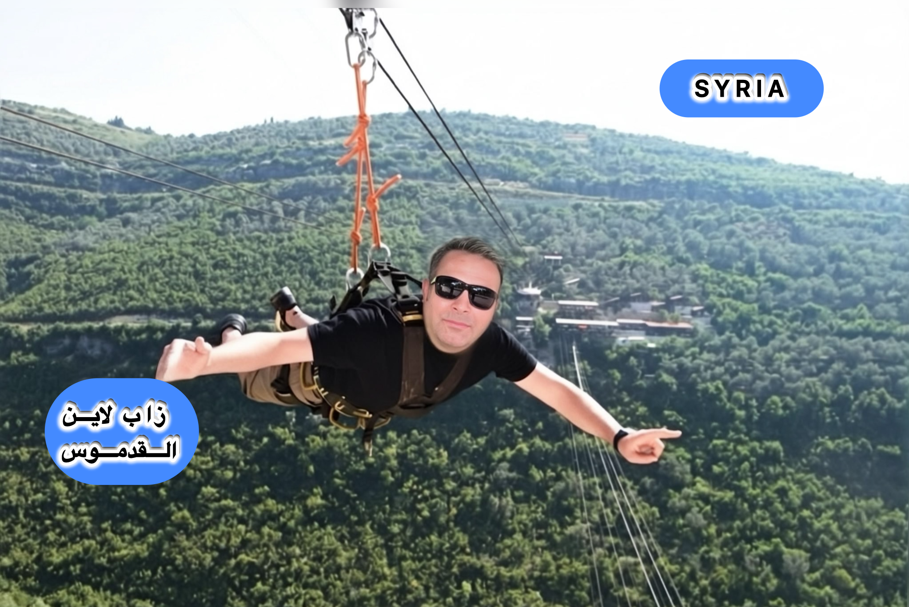
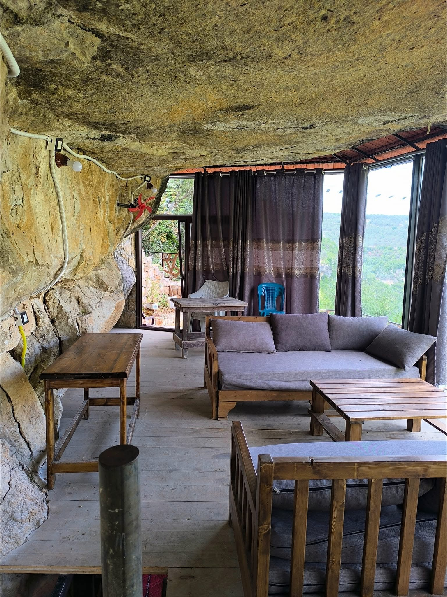
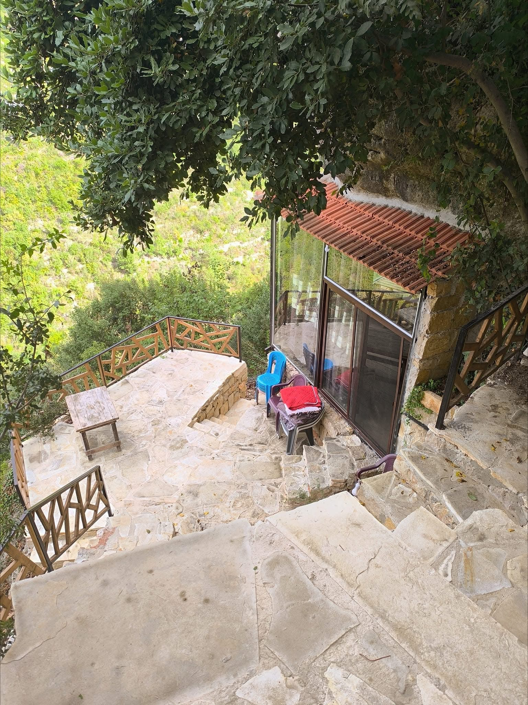
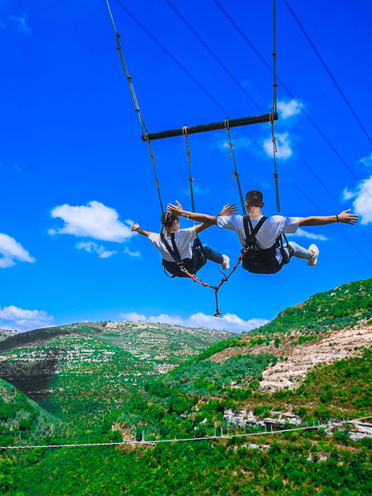
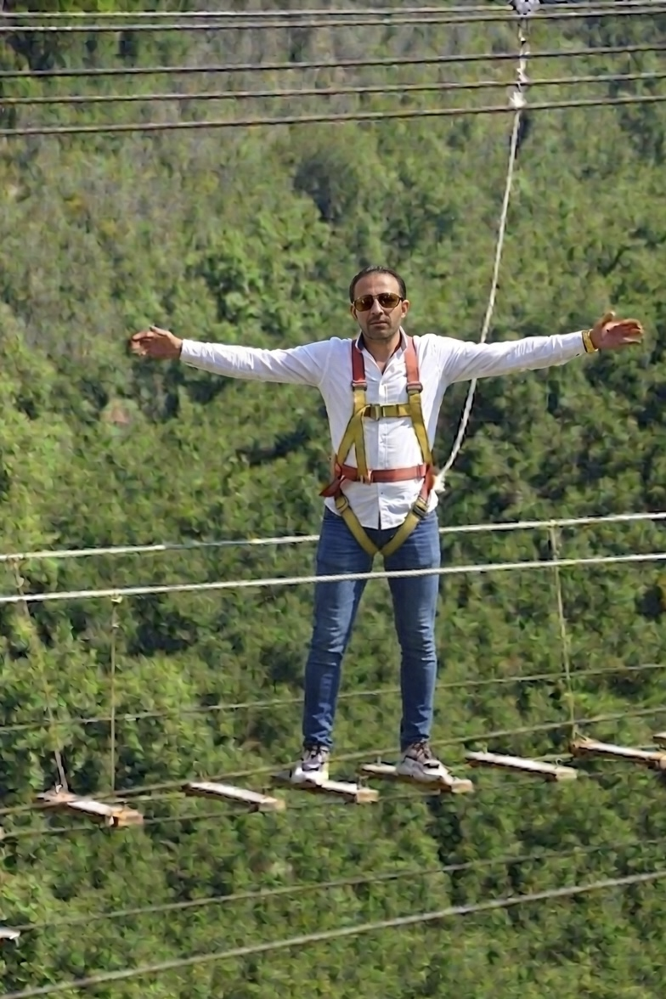

الشفافية في الوصف.. الجمال في الواقع
أهلاً بكم في مدينتي، القدموس. أنا لست مجرد صاحب موقع، بل أنا شخص يعيش هنا، يتنفس ضباب هذه الجبال ويعشق تفاصيلها. بصفتي مرشداً محلياً معتمداً في خرائط جوجل، التزم بتقديم صورة حقيقية وشفافة عن كل زاوية في هذه المنطقة الساحرة.
القدموس هي "عروس الضباب"، حيث تجتمع الغابات الكثيفة مع الصخور البازلتية الشامخة. هنا تجدون "زيب لاين الأطلال" الذي يمثل قمة الأدرينالين، وقلعة القدموس التي تحكي قصص الحضارات. هدفي هو مساعدتكم على اكتشاف الأماكن المخفية التي لا يعرفها إلا أبناء المدينة، بعيداً عن الصور التجارية، لنضمن لكم تجربة سياحية أصيلة تلامس الروح.
Transparency in Words, Beauty in Reality
Welcome to my hometown, Al-Qadmus. I am not just a website owner; I am someone who lives here, breathes the mist of these mountains, and loves every detail. As a top-tier Google Maps Local Guide, I am committed to providing a true and transparent image of every corner of this charming region.
Al-Qadmus is the "Bride of Mist," where dense forests meet majestic basalt rocks. Here you find the "Al-Atlal Zip Line" for ultimate adrenaline, and Al-Qadmus Castle telling stories of civilizations. My goal is to help you discover hidden gems known only to locals, ensuring an authentic travel experience that touches the soul.





